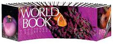

Dictionaries

Types of Dictionaries
Visual:
The library also carries visual dictionaries with different languages, such as French, German and Italian,
all in one book with annotated color photographs.
Foreign Language Visual Bilingual Dictionaries:
These books cover many languages and the visuals come in handy when trying to find a specific word.
Subject Dictionaries:
Math, Dinosaurs, Space, Medical
Thesaurus
Thesauri books contain synonyms and antonyms; words that are similar and contrasting. E.g. Antonyms, meaning opposite.
Most Popular Brands
American Heritage
Roget’s Thesaurus
Merriam-Webster’s Collegiate Thesaurus
Encyclopedias
Encyclopedias contain facts about thousands of subjects. Encyclopedias are creditable references for your work.
